Fotoattēlu galerija
Šajā sadaļā apkopoti vēsturiskie fotoattēli, kas ilustrē necilvēciskos apstākļus, par kuriem minēts romānā "Svina garša".
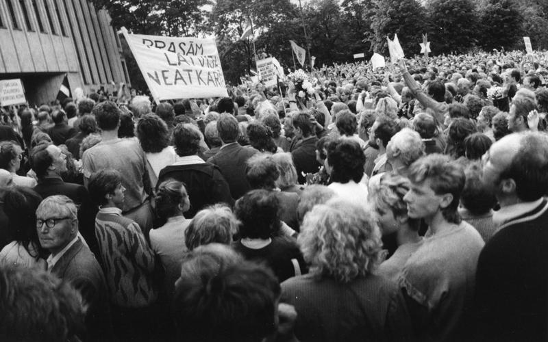
1941. gada deportācijas Latvijā
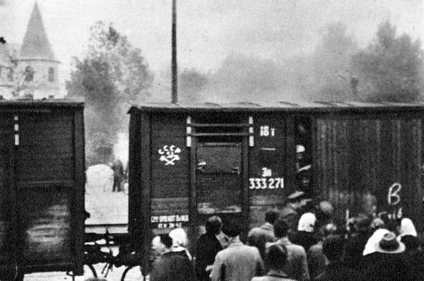
Lopu vagoni, ar kuriem latvieši tika deportēti
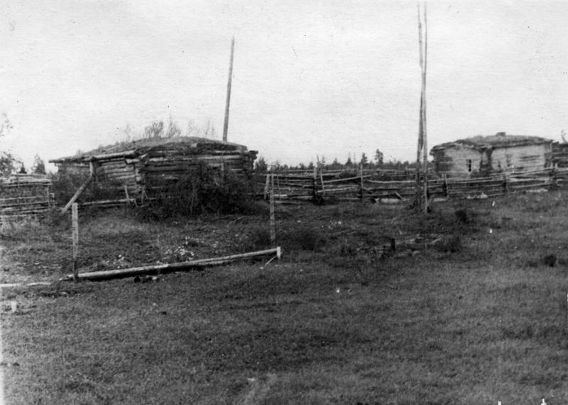
Sibīrijas ainava, līdzīga tai, kur nonāca deportētie
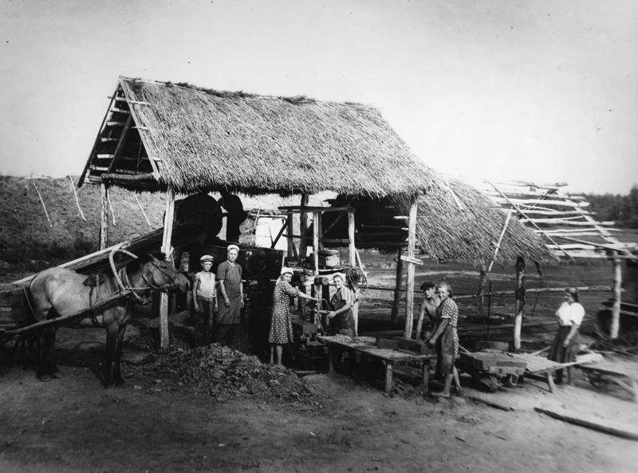
Deportēto latviešu mājas Sibīrijā
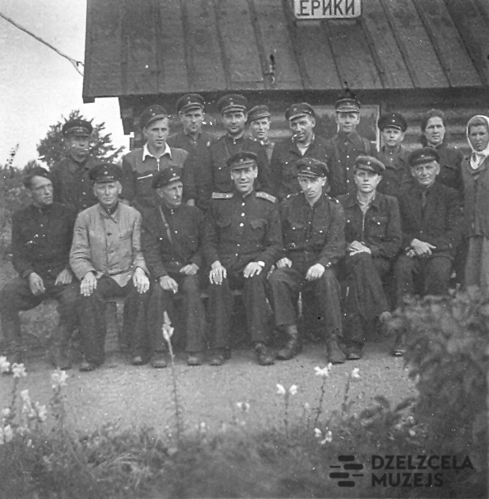
Latvieši Sibīrijā, 1950. gadi
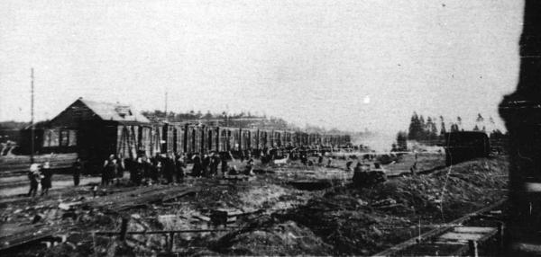
Deportēto atgriešanās Latvijā pēc atbrīvošanas
Rakstnieks Māris Bērziņš
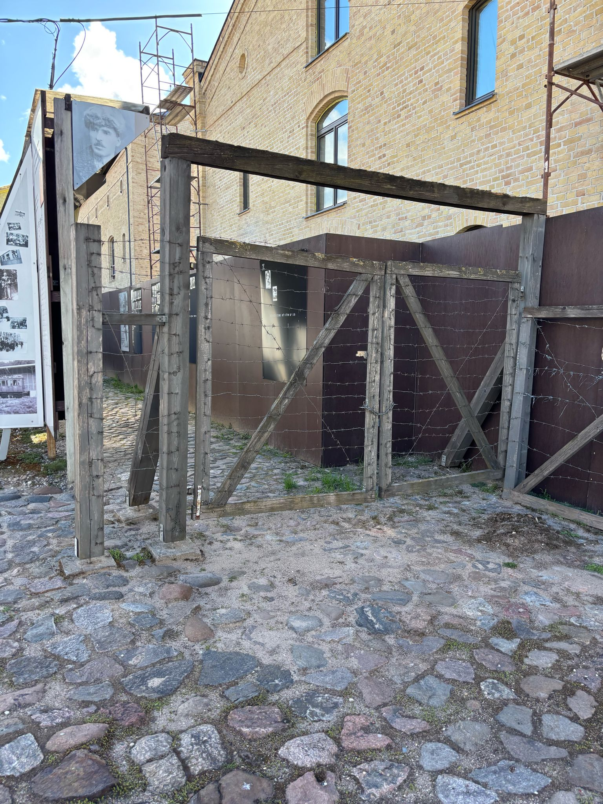
Geto norobežots ar dzeloņsētu.
"Tie pāris slimnieki, kuri vēl spēj pieslieties kājās, stāv pie loga un ieslīpi skatās, kā Ludzas ielas malu norobežo ar dzloņsētu," citāts no 295. lpp.
"Tie pāris slimnieki, kuri vēl spēj pieslieties kājās, stāv pie loga un ieslīpi skatās, kā Ludzas ielas malu norobežo ar dzloņsētu," citāts no 295. lpp.
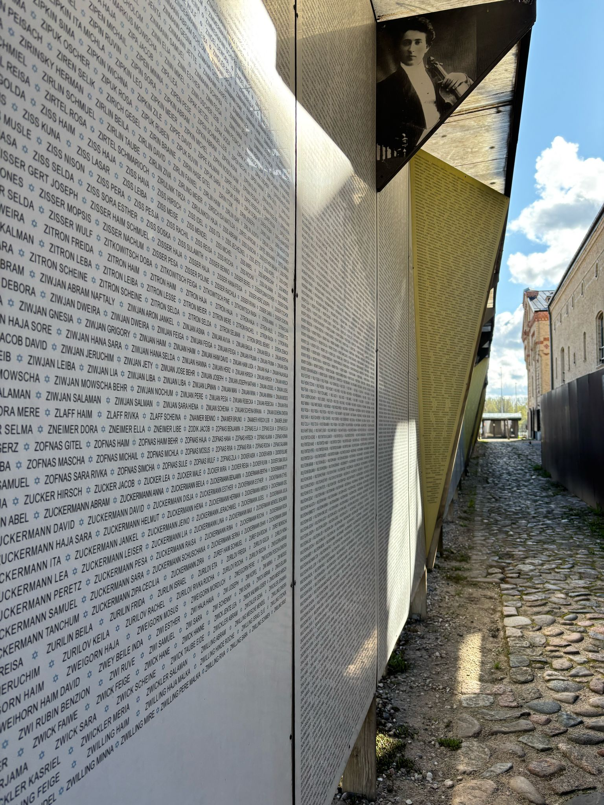
Bojā gājušo ēbreju vārdi.
Grāmatā šāds pats konceps ir 317.-329. lpp.
Grāmatā šāds pats konceps ir 317.-329. lpp.

Geto ieslodzīto zīmējumi
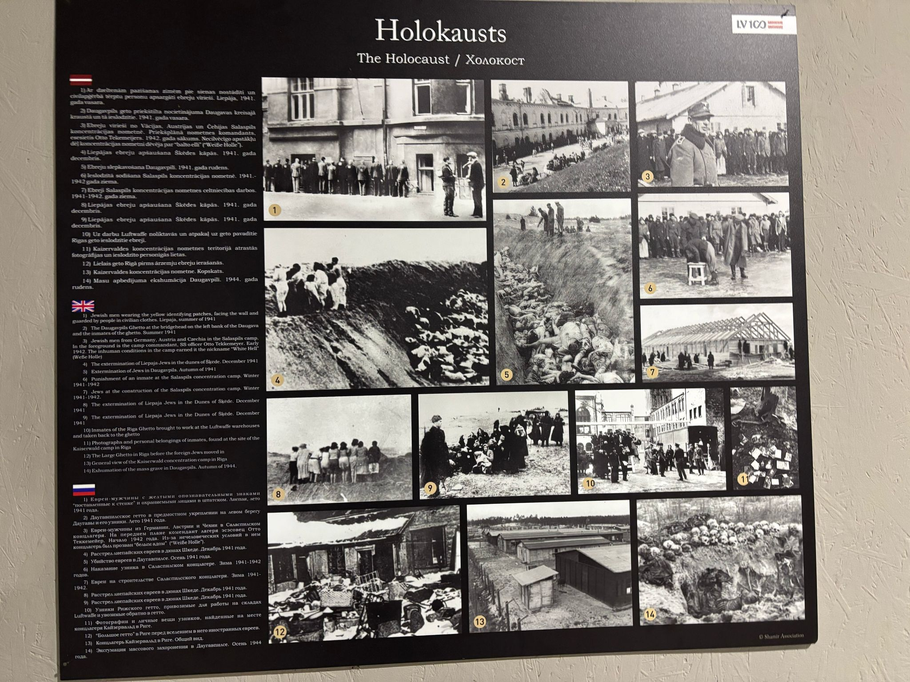
Informatīvs plakāts par Holokaustu
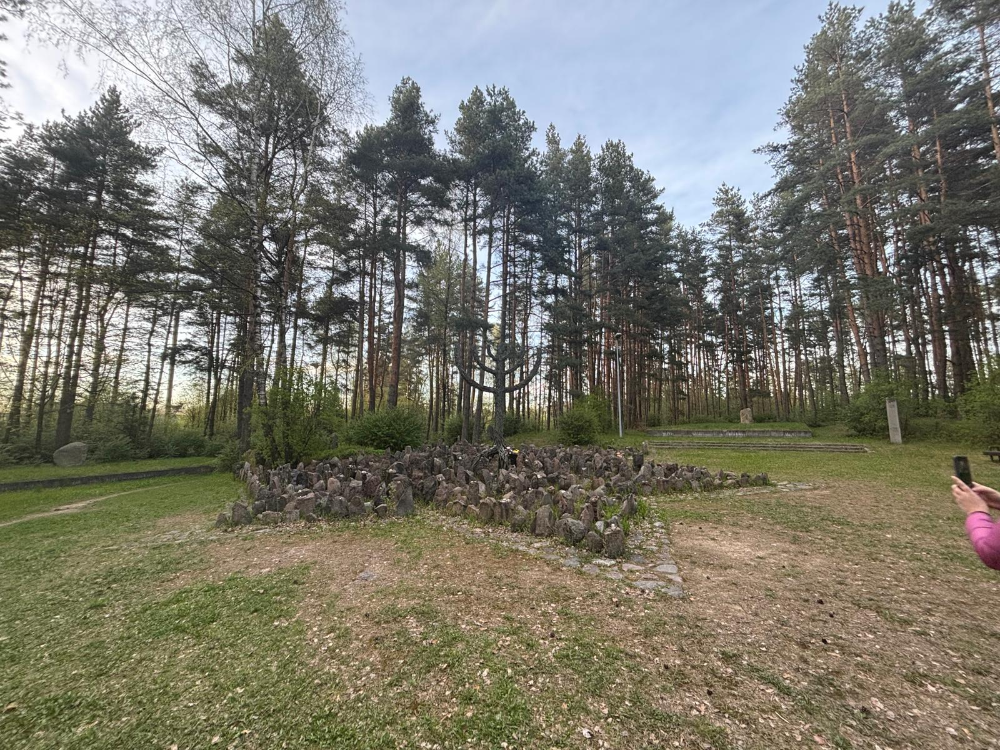
Holokausta piemineklis nošautajiem Rumbulas meža .
Citāts no 313. lpp. : "Starp kokiem un krūmiem var saskatīt izģērbtus ļaudis virzāmies uz ieplaku, līdz viņi pazūd no redzesloka, un saklausīt nepārprotamu, lodēm kapātu murdoņu. Tātad šeit ir mūsu galastacija."
Citāts no 313. lpp. : "Starp kokiem un krūmiem var saskatīt izģērbtus ļaudis virzāmies uz ieplaku, līdz viņi pazūd no redzesloka, un saklausīt nepārprotamu, lodēm kapātu murdoņu. Tātad šeit ir mūsu galastacija."
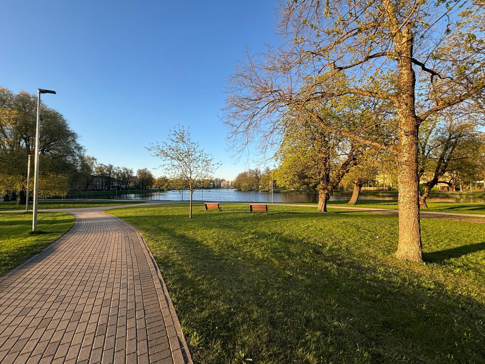
Matīss un Sulamīte pastaigājās ap Māras dīķi.
"Apejam vēlreiz ap Māras dīķi?" citāts no 74. lpp.
"Apejam vēlreiz ap Māras dīķi?" citāts no 74. lpp.